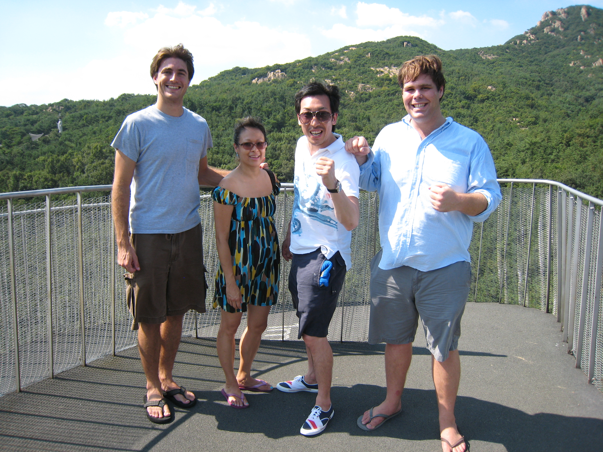
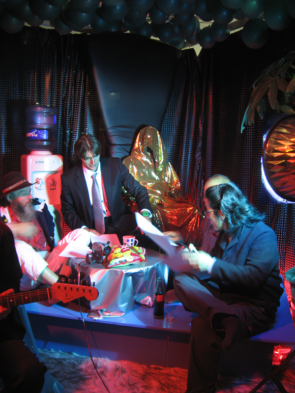
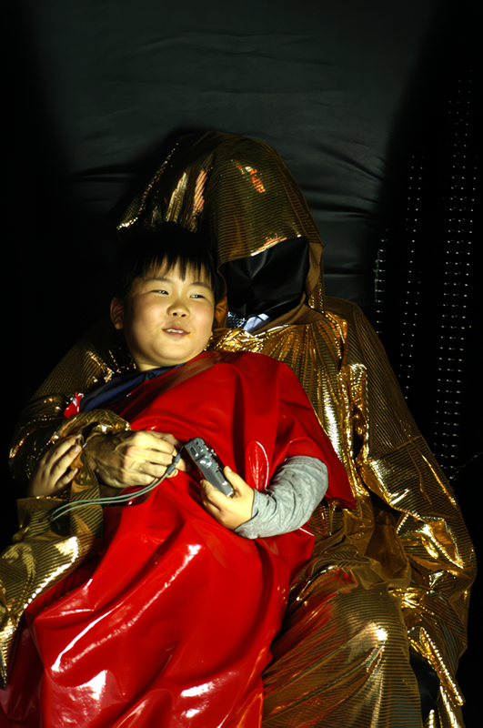
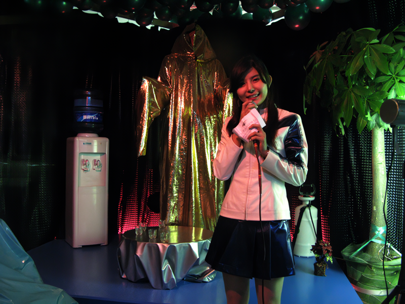
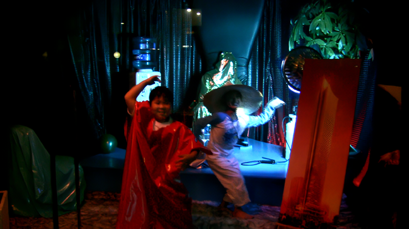

2008년 10월 17일, 석수 플래티넘 그룹(SPG)이 새로 지어진 본부 사무실과 텔레비전 스튜디오로 석수시장의 중심부에 문을 열 것이다. 원하는 사람들은 누구든지 무료로 간단한 다과를 즐기면서 영감이 가득한 새로운 의식에 참여할 수 있다. SPG는 이곳에서 지역 주민들에게 새롭게 발전된 석수동에 관한 회사의 원대한 프로젝트를 알릴 것이고 이를 위해 독특한 맛보기를 제공할 수 있는 방송을 실시간으로 내보낼 것이다.
On October 17th, 2008 Seoksu Platinum Group (SPG) will open the doors to its brand new office headquarters and television studio in downtown Seoksu Market. Everyone is invited to come and enjoy free entertainment, complimentary refreshments, and to take part in and inspirational groundbreaking ceremony. SPG will be broadcasting live from it's new location giving local residents a unique glimpse into the company's grand plans for a new and improved Seoksu.
이들은 2003년부터 렌코트/얏숙 크리에이팅 프로젝트라는 이름 아래 세계적인 자본주의 문화와 다양한 여가 현상들에 초점을 맞추어 활동해왔다. 이들의 작업은 현실과 피상적인 것, 정직함과 속임수, 희망과 허무 사이의 경계들에서의 줄타기한다. 그들이 발전시켜가는 행위와 설치작업들은 종종 세미나나 모델하우스 투어, 사유 라운지 등의 기존 구조들에서 이루어진다. 이들은 문화에 대해 비판적으로 작용하는 것 외에도, 역으로 검토를 받고, 그들과 동행하고, 그들을 기념하는 동시에 이들을 용이하게 하는 진심어린 행동들을 통해서 총체적으로 관입하기를 추구한다.
Since 2003 Justin Rancourt and Chuck Yatsuk have worked in a full time collaboration under the name Rancourt/Yatsuk creating projects focused on the global culture of capitalism and various leisure phenomena. Their work seeks to ride the line between reality and super ciality, honesty and deceit, hope with futility. The performances they develop and the installations they construct often take the form of existing structures, such as seminars, model home tours, and private lounges. Rancourt and Yatsuk hope to create genuine gestures that not only function as a critique, but also facilitate a total immersion into the culture being examined and in accompaniment, the appropriate celebration.

Justin & Chuck (USA) - in their greenish studio with no furnitures....
저스틴과 척 (미국) - 온지 얼마 안돼 집기가 없어서 고생하는중....

저스틴 랜코트와 척 얏숙는 자칭 "라이프스타일" 예술가들로, 사회적으로 의식적이고 종종 상호작용의 시각 예술 작품과 퍼포먼스 예술 작품을 무대에 올립니다. 미국의 여가 활동과 가정 생활에 기반을 둔 랜코트와 얏숙은 인터넷 기반 마케팅의 속임수와 비밀을 간파하고 참여하려고 합니다. 예를 들면 플로리다의 습지에 사기가 더해저 만들어진 실패한 주택 단지 개발 과정에서 영감을 얻어 가상의 부동산업자 돈 도나부치를 만들어 오픈 하우스를 개최하고 모듈식의 회반죽 집을 판매하려고 시도하며, 그 과정에서 도시화, 인간 생태, 그리고 지속 불가능한 건축 관행의 이면을 다루고 폭로합니다. 두 명의 예술가들은 인터넷이 의심스러운 마케팅 전략을 드러내도록 하는 동시에 관객들에게 비판적이고 냉소적으로 생각하도록 요청하는 불신의 정지를 동원합니다.
   
" 석수시장에 높은 질의 삶을 선사할 계획을 가지고 있는 선진국형의 라이프스타일을 지향하는 부동산 회사입니다. 여러분은 석수시장에 마련된 쇼룸에서 SPG만 제공하는 플레티넘 체험을 하시게 될것입니다"-석수 플래티늄 그룹-
'석수플래티늄그룹'은 한국의 선분양제도를 이용해서 돈을 벌어볼 요량으로 뉴욕과 플로리다에서 건너온 부동산회사다. 10월16일 도우미를 고용해서 전단지를 뿌리고 풍선을 날리고 거창한 오픈식을 하고 석수시장에 수십층의 고층빌딩이 들어선다고 선전을 해댔다. 손님들을 초대해서 음주가무에 취하면 계약서를 내밀어 얼떨결에 서명하게 만든다. 그계약서에 서명한 사람이 몇명이나 되는지는 아무도 모른다. 그들은 10월 30일 이후 종적을 감추었다. 들리는 소문에 의하면 일본에 몇일동안 잠적해 있다가 김포공항으로 재입국을 시도하였으나 미국본사의 부도소식에 곧바로 인천공항에서 미국행 비행기를 탔다고 한다. 믿거나 말거나...